Single degree of freedom oscillator
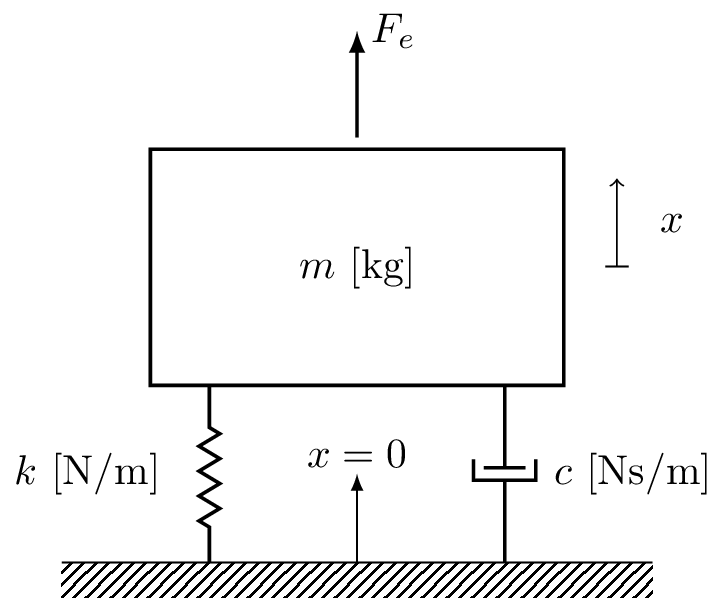
The single Degree of Freedom (DoF) mass-spring oscillator is perhaps one of the simplest, but most important, dynamical systems we can study. The reason being is that (spoiler alert..!) any linear system, regardless of its geometrical complexity, can be represented or modelled as a collection of independent SDoF oscillators. Anyway, thats jumping in the deep-end… Lets take a step back and consider SDoF oscillator from first principles, including the derivation of its equation of motion (EoM), and its unforced (homogenous) and forced solutions.
(FYI, the term degree of freedom (DoF) is a general term used to denote the number of independent coordinates required to completely describe a system’s configuration. A mass-spring system with a single mass is described by just one coordinate (i.e. that of the mass), hence it is termed ‘single DoF’.)
Equations of motion of mass-spring system
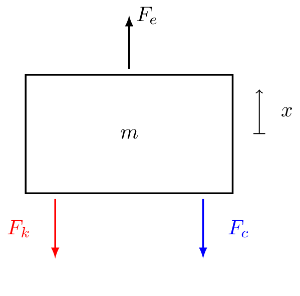
Right, lets get started by deriving the EoM of the single DoF mass-spring system depicted in Figure 1.
Newton’s second law states that the sum of all forces acting on the mass is equal to its acceleration time its mass, \[ F=ma \quad\quad \sum_i F_i = m\ddot{x} \] To determine what forces are acting on our mass it is often useful to draw a free body diagram of the system, as in Figure 2. \[ \begin{align} m\ddot{x} & = \sum_i F_i \\ m \ddot{x} & = +F_e + F_k + F_c \end{align} \] where \(F_e\) is an external force, defined in the direction of positive travel, and \(F_k\) and \(F_c\) are forces that oppose motion.
Ideal springs
An ideal spring has no mass and generates a force proportion to its elongation \(\Delta x\). The force generated is always in opposite direction to displacement and linearly related to the elongation of the spring.
For a single-sided spring we have, \[ F_k = -kx_1 \] where \(k\) is called the spring stiffness with units (N/m). For a two-sided spring, \[ F_k = k\overbrace{(x_2-x_1)}^{\Delta x} \] where the force at each end is equal and opposite in direction.
The spring force always opposes displacement:
- If \(\Delta x<0\) then \(F_k>0\)
- If \(\Delta x>0\) then \(F_k<0\)
Ideal springs are linear - the spring force and elongation remain linearly related indefinitely. Simply put, doubling the extension doubles the force generated, \[ F_k = -kx_1 \quad \quad 2F_k = -k\, 2x_1 \]
Note that real springs are non-linear when subject to large deformations.
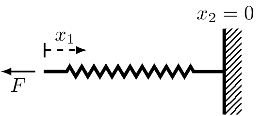
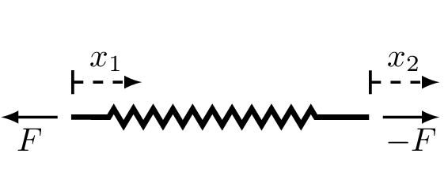
Parallel and series springs
When two springs are in parallel, they will always have the same displacement at either end. The total force generated divides itself into \(F_{k1}\) and \(F_{k2}\), \[ \begin{align} F_{k1} & = k_1(x_2-x_1) \\ F_{k2} & = k_2(x_2-x_1) \end{align} \] The total force is given by the sum of the forces generated by the two springs, \[ \begin{align} F_k & = F_{k1}+F_{k2} \\ & =\underbrace{(k_1+k_2)}_{k_t}(x_2-x_1) \end{align} \tag{1}\]
From Equation 1 we see that the total stiffness of the parallel springs is just the sum of individual spring stiffness’s. We can generalise this result to an arbitrary number of springs as, \[ \begin{equation} k_t = \sum_i^N k_i \end{equation} \]
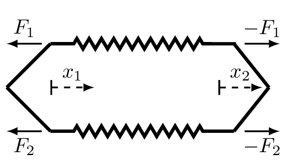
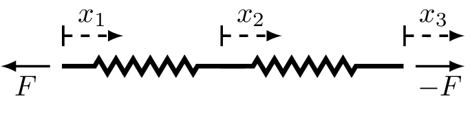
When two springs are arranged in series they by definition must have the same force through their lengths. \[ F_{k} = k_1(x_2-x_1) \tag{2}\] \[ F_{k} = k_2(x_3-x_2) \tag{3}\] From Equation 2 we get, \[ \begin{equation} x_2 = \frac{F_k}{k_1} + x_1 \end{equation} \] Substituting this into Equation 3, \[ F_k = k_2(x_3 -x_1 -\frac{F_k}{k_1}) \] A little bit of algebra leads to, \[ F_k =\underbrace{ \left(\frac{1}{k_1}+\frac{1}{k_2}\right)^{-1} }_{k}(x_3-x_1) \tag{4}\] Note that for a series configuration, the total stiffness is always less than individual stiffnesses. We can generalise Equation 4 to an arbitrary number of springs by, \[ k = \left(\sum_i^N \frac{1}{k_i}\right)^{-1} \]
Ideal viscous damper
A viscous damper has no mass and generates a force proportion to the relative velocity \(\Delta \dot{x}\). The force generated is always in opposite direction and linearly related to the relative velocity of the dashpot.
For a single-sided dashpot we have, \[ F_c = -c\dot{x}_1 \] where \(c\) is the viscous damping coefficient with units (Ns/m).
For a two-sided dashpot, \[ F_c = c\overbrace{(\dot{x}_2-\dot{x}_1)}^{\Delta \dot{x}} \]
Note that the same equations apply for series and parallel dashpot arrangements as for springs.
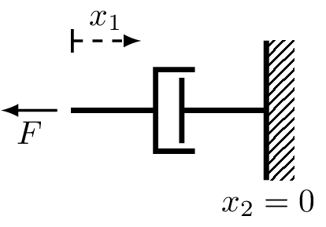
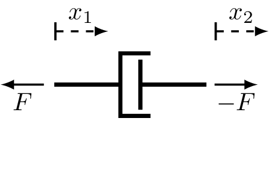
Equation of motion (cont.)
Substituting in the spring and dashpot forces, Newton’s second law states that, \[ \begin{align} m \ddot{x} & = F_e + F_k + F_c \\ & = F_e -kx -c\dot{x} \end{align} \] To obtain the equation of motion we isolate external force, \[ F_e = m\ddot{x} + kx + c\dot{x} \tag{5}\] This is a second order linear differential equation with constant coefficients.
Unforced solution
We begin by considering the homogenous, i.e unforced (\(F_e=0\)), solution to Equation 5. In doing so, we are interested in the displacement response \(x(t)\) of the system given some set of initial conditions, specifically an initial displacement \(x_0\) and velocity \(\dot{x}_0\).
Undamped
We start with the undamped case, where \(c = 0\). Our EoM takes the form, \[ 0 = m\ddot{x} + kx \quad \quad (F_e = c= 0) \] Dividing both sides by \(m\) we get, \[ 0 = \ddot{x} + \frac{k}{m}x = \ddot{x} + \omega_n^2 x \] Next, we consider a solution of the form \(x(t) = Ae^{st}\), \[ 0 = s^2 Ae^{st} + \omega_n^2 Ae^{st} \] Dividing through by \(Ae^{st}\) we obtain the so-called characteristic equation, \[ 0 = s^2 + \omega_n^2 \quad\quad s^2 = -\omega_n^2 \] Taking the square root of both sides, recalling that \(i = \sqrt{-1}\), we find \(s\) to be, \[ s = \pm \sqrt{-\omega_n^2} = \pm i \omega _n \] Note that there are two roots; the solution is the sum of each, \[ x(t) = A_1 e^{-i\omega_n t} + A_2 e^{i\omega_n t} \tag{6}\] where \(A_1\) and \(A_2\) are constants that depend on initial conditions, \(x_0\) and \(\dot{x}_0\).
Clearly, imaginary roots lead to complex exponential, i.e. harmonic motion at frequency \(\omega_n\). We call \(\omega_n\) the natural frequency of vibration, or the characteristic frequency. From the above we see that a force free undamped mass-spring system will always oscillate at \(\omega_n\), regardless of IC.
Initial conditions
We have obtained the general form of the solution in Equation 6. Next, we need to determine the constants \(A_1\) and \(A_2\) in terms of initial displacement \(x_0\) and velocity\(\dot{x}_0\).
We begin by evaluating Equation 6 at \(t=0\), which yields, \[ x(0) = x_0 = A_1 + A_2 \] Next, we take the derivative of Equation 6 to obtain an equation for the velocity, before evaluating it also at \(t=0\). This yields, \[ \dot{x}(0) = \dot{x}_0 = -i\omega_n A_1 +i\omega_n A_2 \quad\rightarrow\quad \frac{\dot{x}_0}{i\omega_n} = -A_1+A_2 \] From the above, after some simple algebra, we obtain, \[ A_1 = \frac{1}{2}\left(x_0 -\frac{\dot{x}_0}{i\omega}\right) \quad \quad A_2 = \frac{1}{2}\left(x_0 +\frac{\dot{x}_0}{i \omega}\right) \] Notice that \(A_1\) and \(A_2\) are complex conjugates… So we only have two independent constants since \(A_1 = a+ib\) and \(A_2=a-ib\). This is expected as system is second order.
If we substitute the constants into solution and use Euler’s formula, \[ \begin{align} x(t) & = \frac{1}{2}\left(x_0 -\frac{\dot{x}}{i\omega}\right) e^{-i\omega_n t} + \frac{1}{2}\left(x_0 +\frac{\dot{x}}{i\omega}\right) e^{i\omega_n t} \\ & = \frac{1}{2}x_0\underbrace{ \left(e^{i\omega_n t} + e^{-i\omega_n t} \right) }_{2\cos\omega_n t}+\frac{1}{2}\frac{\dot{x}}{\omega} \underbrace{\frac{1}{i}\left(e^{i\omega_n t}- e^{-i\omega_n t} \right)}_{2\sin\omega_n t} \end{align} \] From the above, the real solution is given by, \[ x(t) = x_0 \cos\omega_n t + \frac{\dot{x}_0}{\omega_n} \sin\omega_n t \] Finally, using the trigonometric identity \(a\cos\theta + b\sin\theta = \sqrt{a^2+b^2}\cos(\theta - \phi)\) where \(\phi = \tan^{-1}(b/a)\), we can write the solution in a simple \(\cos\) form as, \[ x(t) = |A| \cos(\omega_nt-\phi) \quad \mbox{with}\quad |A| = \sqrt{x_0^2 +\frac{\dot{x}_0^2}{\omega^2}} \quad \mbox{and} \quad \phi = \tan^{-1}\left(\frac{1}{\omega_n}\frac{\dot{x}_0}{x_0}\right) \]
Damped
Let us now consider the damped system. Reintroducing \(c\), our homogenous EoM becomes, \[ 0 = m\ddot{x} + c\dot{x} + kx \quad \quad (F_e =0) \] As for the undamped, we divide through by \(m\) to get, \[ 0 = \ddot{x} +2\zeta\omega_n \dot{x} + \omega_n^2 x \] where we introduce the viscous damping factor, defined as, \[ \zeta = \frac{c}{2m\omega_n} \] Note that the reason for introducing \(\zeta\) is largely for mathematical convenience, as we will see shortly. As before, we assume a solution of form \(x(t) = Ae^{st}\) and make the necessary substitutions, \[ 0 = s^2 Ae^{st} +2\zeta\omega_n s Ae^{st} + \omega_n^2 Ae^{st} \] Finally, dividing through by \(Ae^{st}\) we obtain the system’s characteristic equation, \[ 0 = s^2 +2\zeta\omega_n s + \omega_n^2 \tag{7}\] Note that Equation 7 is simply a quadratic equation in \(s\). We can solve this easily using the quadratic formula as, \[ \begin{array}{c} s_1 \\ s_2\end{array} = \left(-\zeta \pm \sqrt{\zeta^2-1}\right)\omega_n \tag{8}\] Perhaps it is clear now why we introduced \(\zeta\); it leads to Equation 8 takeing a particularly simple form.
Plugging our roots \(s_{1,2}\) back into our assumed solution \(x(t) = Ae^{st}\), \[ x(t) = A_1e^{ \left(-\zeta - \sqrt{\zeta^2-1}\right)\omega_n t} + A_2 e^{\left(-\zeta + \sqrt{\zeta^2-1}\right)\omega_n t} \tag{9}\] or by factoring out constant part of exponential \(e^{-\zeta \omega_n t}\), \[ x(t) = \left(A_1e^{ -\sqrt{\zeta^2-1}\omega_n t} + A_2 e^{\sqrt{\zeta^2-1}\omega_n t}\right)e^{-\zeta\omega_n t} \tag{10}\] Equation 9 and Equation 10 represent the general solution of our damped mass-spring system. As before, the constants \(A_1\) and \(A_2\) depend on the initial condition, and will be dealt with shortly. For now, it is more important to notice that the nature of this solution depends heavily on the value of \(\zeta\)!
- If \(\zeta=0\) then \(s_{1,2}\) are purely imaginary and the solution is that of undamped case we have already seen.
- If \(0<\zeta<1\) then \(s_{1,2}\) are complex (because of negative in square root) and the solution will become a decaying sinusoid.
- If \(\zeta=1\) then \(s_{1,2}\) are purely real and the solution decays exponentially at the fastest possible rate.
- If \(\zeta>1\) then \(s_{1,2}\) are purely real and the solution decays exponentially at an increasing slow rate.
These different scenarios are shown in Figure 7, and described in more detail below.
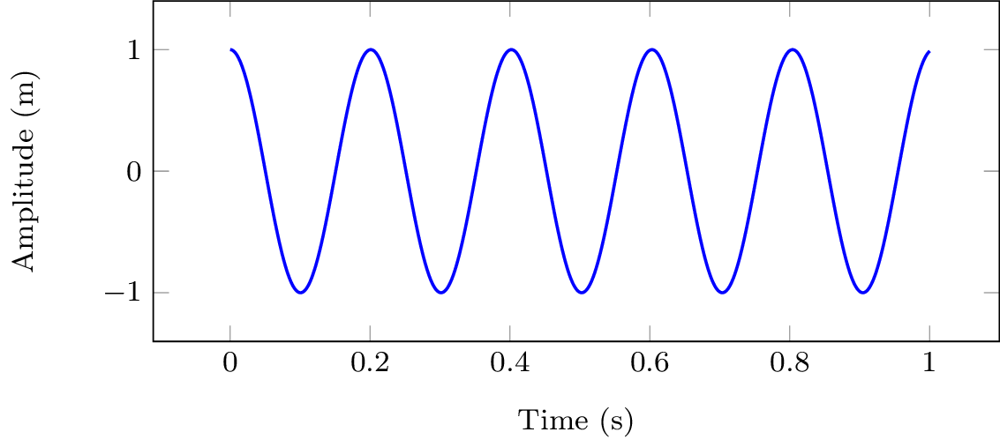
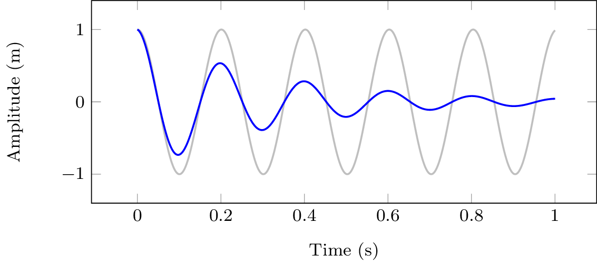
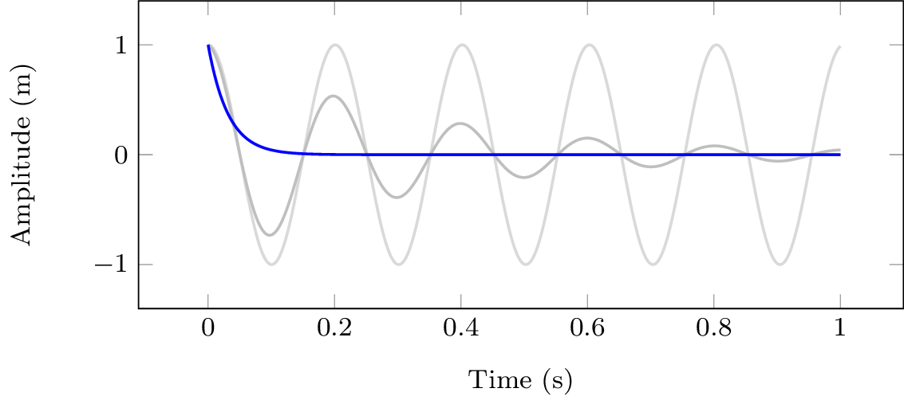
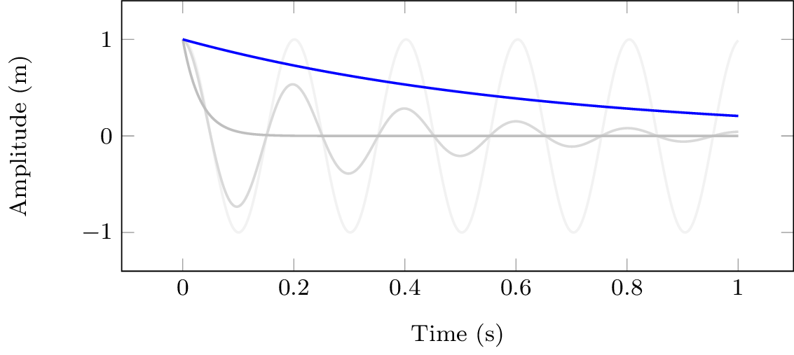
Undamped
When \(\zeta=0\), Equation 10 reduces to (noting that \(\sqrt{-1}=i\)), \[ x(t) = \left(A_1e^{ -i\omega_n t} + A_2 e^{i\omega_n t}\right) \] which, as expected, is exactly what we obtained for the undamped case.
Underdamped
For the under-damped case that \(0<\zeta<1\), it is useful to write \(\sqrt{\zeta^2-1}\) instead as \(i\sqrt{1-\zeta^2}\) such that Equation 10 becomes, \[ x(t) = \left(A_1e^{ -i\sqrt{1-\zeta^2}\omega_n t} + A_2 e^{i\sqrt{1-\zeta^2}\omega_n t}\right)e^{-\zeta\omega_n t} \] Taking the same form as the undamped case, the bracketed term represents a periodic oscillation at a frequency of \(\omega_d = \sqrt{1-\zeta^2}\omega_n\). This is termed the frequency of damped natural vibration. It is always slightly lower than the undamped natural frequency (\(\omega_d<\omega_n\)) on account of \(0<\sqrt{1-\zeta^2}<1\) always being less than one. Using \(\omega_d\), Equation 10 takes the form, \[ x(t) = \left(A_1e^{ -i\omega_d t} + A_2 e^{i\omega_d t}\right)e^{-\zeta\omega_n t} \] The exponential sitting outside of the bracket has a real power, and so represents an exponential decay term. Note that this decay is proportional to the undamped natural frequency \(\omega_n\); higher frequencies decay more rapidly. The rate of decay is also proportional to \(\zeta\); larger values of \(\zeta\) leads to a quicker decay.
Following the same steps as for the undamped case, our damped solution can also be expressed in a simpler \(\cos\) form as, \[ x(t) = |A|\cos(\omega_d t - \phi) e^{-\zeta\omega_n t} \] with the initial conditions, \[ A = x_0 + \frac{\dot{x}_0 {\color{orange} +\zeta\omega_n x_0}}{i \omega_d} \quad |A| = \sqrt{\Re(A)^2 + \Im(A)^2} \quad \phi = \tan^{-1}\left(\frac{\Im(A)}{\Re(A)}\right) \] It is this under-damped solution that we are most interested in, and will revisit later when considering multi-DoF systems.
Critically damped
When \(\zeta=1\) we reach the transition point between under and over-damped scenarios. We term this case critical damping. In reality, one never achieves critical damping exactly; \(\zeta\) is always slightly larger or smaller than 1 in practice. Nevertheless, in theory it can be shown that the critically damped solution has the form, \[ x(t) = (A_1+tA_2)e^{-\omega_n t} \tag{11}\] which occurs when, \[ \zeta = 1 = \frac{c}{2m\omega_n} \rightarrow c_{cr} = 2m\omega_n = 2\sqrt{km} \] Admittedly, it is not immediately obvious how Equation 10 reduces to Equation 11 when \(\zeta=1\). Substituting \(\zeta=1\) directly into Equation 10 yields, \[ x(t) = \left(A_1 + A_2 \right)e^{-\omega_n t} = A_1e^{-\omega_n t} \tag{12}\] which is indeed a valid solution, but it is not the only one. It implies that given an initial displacement \(x_0\), the initial velocity must be \(\dot{x}_0 = -A_1/\omega_n\). Physically however, there is nothing stopping us from setting the initial displacement and then applying whatever initial velocity we want! So, Equation 12 is clearly missing something…
The issue is that as \(\zeta\rightarrow 1\) the two roots \(s_{1,2}\) merge into \(s\), meaning we no longer have two independent solutions and so cannot guarantee all solutions. To find the missing solution we define \(\alpha=\sqrt{\zeta^2-1}\omega_n\) such that our general solution takes the form, \[ x(t) = \left(A_1e^{ -\alpha t} + A_2 e^{\alpha t}\right)e^{-\zeta\omega_n t} \] We then take \(A_2 = -A_1\) and consider the limit as we approach critical damping \(\alpha \rightarrow 0\) and \(\zeta\rightarrow 1\). For small \(\alpha\) we can take \(e^{\pm\alpha t}=1\pm\alpha t\), which leads to our missing solution, \[ x(t) = \left(A_1(1-\alpha t) - A_1 (1+\alpha t)\right)e^{-\zeta\omega_n t} = -2\alpha t e^{-\omega_n t} \] Recalling that we can multiply a solution by a constant and it remains a solution, we can rewrite our new solution as, \[ x(t) = A_2 t e^{-\omega_n t} \] Finally, the general solution is the sum of our individual solution, as in Equation 11.
Over-damped
Lastly, in the over-damped case where \(\zeta>1\), we see that our solution is just the sum of two exponential decays, \[ x(t) = A_1e^{ -\left(\zeta + \sqrt{\zeta^2-1}\right)\omega_n t} + A_2 e^{-\left(\zeta - \sqrt{\zeta^2-1}\right)\omega_n t} \tag{13}\] Note that \(\left(\zeta \pm \sqrt{\zeta^2-1}\right) > 1\), and so Equation 13 will always decay slower than Equation 12. This means that the critically damped response corresponds to the fastest possible decay, without oscillation. Any further redution in the damping \(\zeta\) will lead to complex roots \(s_{1,2}\) and some oscillaton.
Forced solution
Now that we have dealt with the unforced, homogenous, solution we turn our attention to the force solution. As such, our EoM now takes the form, \[ F_e = m\ddot{x} + kx + c\dot{x} \] where \(F_e\) has been reintroduced. We will consider three different scenarios with regards to the external forcing; harmonic forcing at a single frequency, forcing by a periodic function, and forcing by an arbitrary waveform.
Harmonic forcing
Harmonic forcing at frequency \(\omega\) can be expressed in complex exponential form as, \[ F_e(t) = F_0 e^{i\omega t} \] where \(F_0\) is a complex amplitude. We will assume that this force as been acting for all time, and so any transient behavior due to its initial application have decayed to 0.
As a consequence of our mass-spring-damper system being linear, its response must also be harmonic at the same frequency, \[ x(t) = X_0 e^{i\omega t} \tag{14}\] where \(X_0\) is similarly a complex amplitude. Note that the magnitude and phase of \(X_0\) will differ from \(F_0\) on account of the system’s dynamics.
Substituting the harmonic terms above and performing the necessary derivatives we arrive at, \[ F_e = kx + c\dot{x} + m\ddot{x} \quad \quad F_0 e^{i\omega t} = k X_0 e^{i\omega t} + ci\omega X_0 e^{i\omega t} - m\omega^2 X_0 e^{i\omega t} \] Now dividing through by \(e^{i\omega t}\) leaves us with, \[ F_0 = \overbrace{(k + i\omega c - \omega^2 m)}^{D(\omega)}X_0 \quad \rightarrow \quad X_0 = R(\omega) F_o \tag{15}\] where \(D(\omega)\) is a complex function termed the dynamic stiffness that depends on frequency and describes the system’s dynamics; \(R(\omega)\) is the inverse of \(D(\omega)\) and is termed the receptance. More generally, \(D(\omega)\) and \(R(\omega)\) are termed frequency response functions or FRFs, a concept we will return to shortly.
Equation 15 provides a means of calculating the complex amplitude of the harmonic response given the forcing amplitude. Once \(X_0\) is obtained, the time series response can be obtained using Equation 14. Alternativly, the magnitude and phase of \(R(\omega)\) can be examined and the response obtained using the standard \(|A| \cos(\omega t - \phi)\) form.
To examine \(R(\omega)\) further we separate the real and imaginary parts of the denominator, \[ R(\omega) = \frac{1}{k + i\omega c - \omega^2 m} = \frac{1}{\underbrace{(k - \omega^2 m)}_{\mbox{Real}}+ \underbrace{i\omega c}_{\mbox{Imag}} } \] The magnitude is now obtained simply as, \[ |R(\omega)| = \frac{1}{|k - \omega^2 m+ i\omega c |} = \frac{1}{\sqrt{(k - \omega^2 m)^2+ (\omega c)^2}} \] Recalling from our treatment of hte homogenous case \(\omega_n = \sqrt{k/m}\) and \(c = \zeta 2 k/ \omega_n\), the receptance magnitude becomes, \[ |R(\omega)| = \frac{1}{\sqrt{k^2\left(1 - \omega^2 \frac{m}{k}\right)^2+ (\omega c)^2}} = \frac{1}{\sqrt{k^2\left(1 - \frac{\omega^2}{\omega_n^2}\right)^2+ \left( \zeta 2 k \frac{\omega}{\omega_n}\right)^2}} = \frac{1}{k \sqrt{\left(1 - \frac{\omega^2}{\omega_n^2}\right)^2+ \left( \zeta 2 \frac{\omega}{\omega_n}\right)^2}} \tag{16}\] We see that the magnitude increases as \(\left(1 - \frac{\omega^2}{\omega_n^2}\right)\) goes to zero, and its maximum is limited by \(\zeta 2 k \frac{\omega}{\omega_n}\).
Shown in Figure 9 are the receptance frequency response curves obtained for different levels of damping. The peak value of the magnitude is marked and takes a value \(\omega_{peak} = \omega_n\sqrt{1-2\zeta^2}\). Note that this peak value is always less than the undamped natural frequency \(\omega_n\). It is obtained by taking the derivative of Equation 16, setting this to zero, and solving for \(\omega\).
Factoring our constants and using the reciporcal rule \([1/u(x)]' = - u(x)'/u(x)^2\), \[ \frac{\partial |R|^2}{\partial \omega} = - \frac{1}{k^2} \frac{ \frac{\partial}{\partial \omega} \left(\left(1 - \frac{\omega^2}{\omega_n^2}\right)^2+ \left( \zeta 2 \frac{\omega}{\omega_n}\right)^2\right)}{ \left(\left(1 - \frac{\omega^2}{\omega_n^2}\right)^2+ \left( \zeta 2 \frac{\omega}{\omega_n}\right)^2\right)^2} \] Using the summation rule \((a\cdot u(x) + b\cdot v(x))' = a\cdot u(x)' + b\cdot v(x)'\) \[ \frac{\partial |R|^2}{\partial \omega} = - \frac{1}{k^2} \frac{ \frac{\partial}{\partial \omega} \left(1 - \frac{\omega^2}{\omega_n^2}\right)^2+ \left(\frac{\zeta 2}{\omega_n}\right)^2 \frac{\partial}{\partial \omega}\left(\omega\right)^2}{ \left(\left(1 - \frac{\omega^2}{\omega_n^2}\right)^2+ \left( \zeta 2 \frac{\omega}{\omega_n}\right)^2\right)^2} \] Using the chain rule \(u(v(x))' = u(v)'u(x)'\) and the power rule \([u(x)^n]' = nu^{n-1}\), \[ \frac{\partial |R|^2}{\partial \omega} = - \frac{1}{k^2} \frac{ 2\left(1 - \frac{\omega^2}{\omega_n^2}\right) \frac{\partial}{\partial \omega} \left(1 - \frac{\omega^2}{\omega_n^2}\right)+ \left(\frac{\zeta 2}{\omega_n}\right)^2 2\omega}{ \left(\left(1 - \frac{\omega^2}{\omega_n^2}\right)^2+ \left( \zeta 2 \frac{\omega}{\omega_n}\right)^2\right)^2} \] Using \((1)' = 0\) and reapplying the power rule, \[ \frac{\partial |R|^2}{\partial \omega} = - \frac{1}{k^2} \frac{ - 2\left(1 - \frac{\omega^2}{\omega_n^2}\right) \left( \frac{2 \omega}{\omega_n^2}\right)+ \left(\frac{\zeta 2}{\omega_n}\right)^2 2\omega}{ \left(\left(1 - \frac{\omega^2}{\omega_n^2}\right)^2+ \left( \zeta 2 \frac{\omega}{\omega_n}\right)^2\right)^2} \] We now set the derivative to zero, and multiply both sides by the denominator, \[ 0 = - 2\left(1 - \frac{\omega^2}{\omega_n^2}\right) \left( \frac{2 \omega}{\omega_n^2}\right)+ \left(\frac{\zeta 2}{\omega_n}\right)^2 2\omega \] Do a little algebra, \[ \left(\frac{2 \omega}{\omega_n^2} - \frac{2 \omega^3}{\omega_n^4}\right) = \left(\frac{\zeta 2}{\omega_n}\right)^2 \omega \] …a little more algebra… \[ \frac{2}{\omega_n^2} - \frac{2 \omega^2}{\omega_n^4} = \left(\frac{\zeta 2}{\omega_n}\right)^2 \] …nearly there… \[ \frac{2 \omega^2}{\omega_n^4} = -\left(\frac{\zeta 2}{\omega_n}\right)^2+\frac{2}{\omega_n^2} \] \[ \omega^2 = -2\left(\frac{\zeta \omega_n^2}{\omega_n}\right)^2+\frac{\omega_n^4}{\omega_n^2} = -2\zeta^2 \omega_n^2+\omega_n^2 = \omega_n^2(1 - 2\zeta^2) \] And finally, taking the square-root of both sides, \[ \omega_{peak} = \omega_n\sqrt{1 - 2\zeta^2} \] Et voila! Now, was that worth it? Probably not!
Note that if \(\zeta>1/\sqrt{2}\) the response has no peak, and that if \(\zeta=0\), it has a discontinuity at \(\omega/\omega_n = 1\).
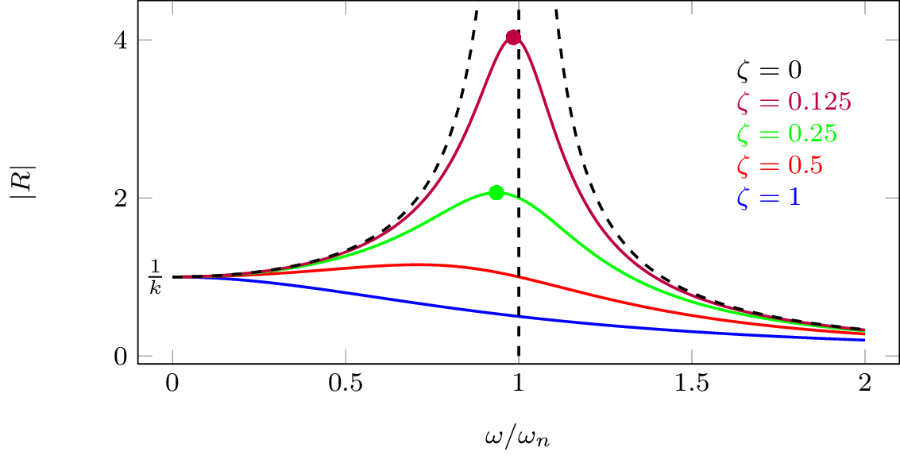
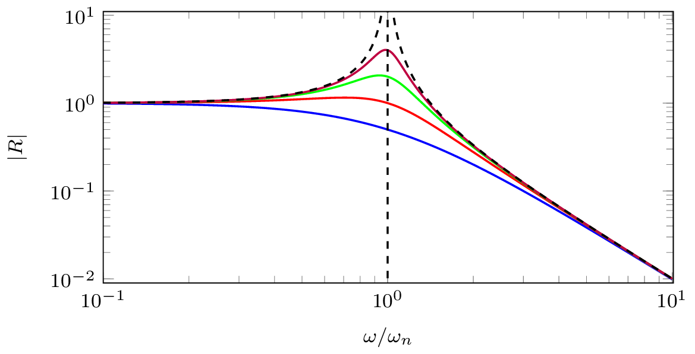
To get the phase response we need to separate real and imaginary parts of the receptance. We do this by multiplying numerator and denominator by the complex conjugate of the denominator, \[ \begin{align} R(\omega)&= \frac{1}{k\left(1 - \frac{\omega^2}{\omega_n^2}\right) + i \zeta 2 k \frac{\omega}{\omega_n} } {\color{black!50!green}\times \frac{k\left(1 - \frac{\omega^2}{\omega_n^2}\right) - i \zeta 2 k \frac{\omega}{\omega_n} }{k(1 - \frac{\omega^2}{\omega_n^2}) - i \zeta 2 k \frac{\omega}{\omega_n} }}\\ &=\underbrace{\frac{k\left(1 - \frac{\omega^2}{\omega_n^2}\right)}{k^2\left(1 - \frac{\omega^2}{\omega_n^2}\right)^2 + \left(\zeta 2 k \frac{\omega}{\omega_n}\right)^2 } }_{\mbox{real part}}- i\underbrace{\frac{ \zeta 2 k \frac{\omega}{\omega_n} }{k^2\left(1 - \frac{\omega^2}{\omega_n^2}\right)^2 + \left(\zeta 2 k \frac{\omega}{\omega_n}\right)^2 }}_{\mbox{imag part}} \end{align} \] From the above we obtain the phase response as, \[ \angle R(\omega) = \tan^{-1}\left( \frac{\mbox{imag}}{\mbox{real}} \right) =\tan^{-1}\left( \frac{-\zeta 2 k \frac{\omega}{\omega_n} }{k\left(1 - \frac{\omega^2}{\omega_n^2}\right)} \right)= \tan^{-1}\left( \frac{-c \omega }{k - \omega^2 m} \right) \] Shown in Figure 10 are the phase response curves for different levels fo damping alongside the harmonic response above and below the natural frequency of vibration. We see that the motion of the mass becomes progressively delayed, relative to the excitation force. In the limit at \(\omega\rightarrow \infty\) they are \(180^\circ\) out of phase. For all levels of damping, we have phase of \(-\pi/2\) at undamped resonance \(\omega_n\).
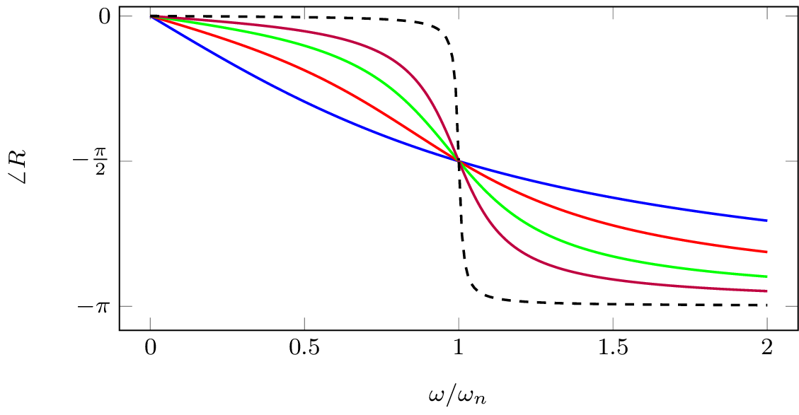
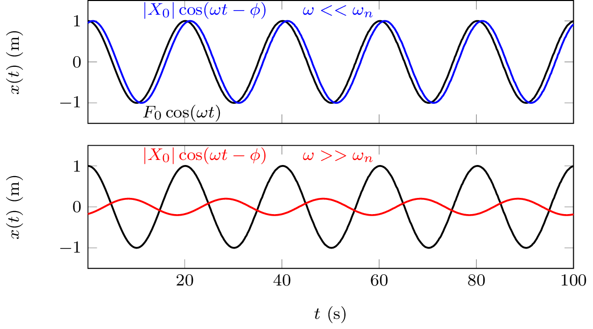
In the case of no damping we have discontinuity at resonance - in reality this never happens, there is always some damping to limit response. Nevertheless, lets look at what would happen anyway… Our EoM without damping, \[ m\ddot{x} +k x = F_0 \cos(\omega_n t) \quad \rightarrow \quad \ddot{x} +\omega_n^2 x = \frac{F_0}{m} \cos(\omega_n t) = \frac{\omega_n^2 F_0}{k} \cos(\omega_n t) \] How do we solve this? We assume solution of \(x(t) = \frac{\omega_n F_0 t}{2k} \sin(\omega_n t)\) and then prove it…
Our proof begins by getting the velocity and acceleration by differentiation (using product rule), \[ \begin{align} \dot{x}(t) &= \frac{\omega_n F_0}{2k} \sin(\omega_n t) + \frac{\omega_n^2 F_0 t}{2k} \cos(\omega_n t)\\ \ddot{x}(t) & = \frac{\omega_n^2 F_0}{2k} \cos(\omega_n t) + \frac{\omega_n^2 F_0}{2k} \cos(\omega_n t) - \frac{\omega_n^3 F_0 t}{2k} \sin(\omega_n t) \end{align} \] Next, we plug everything into our EoM and check LHS and RHS are equal… \[ \ddot{x} +\omega_n^2 x = \frac{\omega_n^2 F_0}{k} \cos(\omega_n t) \] \[ \begin{align} \overbrace{ \frac{\omega_n^2 F_0}{2k} \cos(\omega_n t) + \frac{\omega_n^2 F_0}{2k} \cos(\omega_n t) - \frac{\omega_n^3 F_0 t}{2k} \sin(\omega_n t)}^{ \ddot{x}} +\omega_n^2 \overbrace{ \frac{\omega_n F_0 t}{2k} \sin(\omega_n t)}^{x} \\= \frac{\omega_n^2 F_0}{k} \cos(\omega_n t) \end{align} \] As we can see, it all checks out! \(x(t) = \frac{\omega_n F_0 t}{2k} \sin(\omega_n t)\) is a solution at \(\omega=\omega_n\). What this is saying is that the amplitude grows linearly with time (as in Figure 11) and tends to infinity! In the presence of damping, we obtain a similar response, except that it will plateau at some amplitude on account of the damping removing energy from the system.
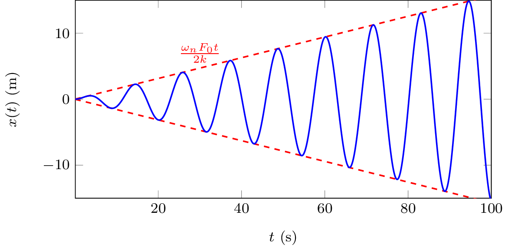
It should be obvious that uncontrolled resonances that occur when damping is very very low, have the potential cause structural damage/failure due to the large displacements that result and should be avoided!
Frequency Response Functions (FRFs)
The Frequency Response Function (FRF) is a very general and useful concept. In short, it provides a means of describing or characterising the dynamics of a system in the frequency domain. What’s particularly useful about FRFs is that they can be obtained from models by analytical means, or experimentally from measurement. This makes FRFs a very useful tool for analysing all sorts of dynamic systems.
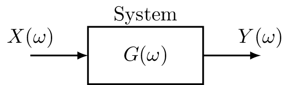
In general, an FRF \(G(\omega)\) describes the complex (i.e. magnitude and phase) relation between a harmonic input signal and the corresponding output signal on a given system. \[ G(\omega) = \frac{Y(\omega)}{X(\omega)} \quad \quad Y(\omega) = G(\omega)X(\omega) \] We can think of the FRF as a black box representation of the system dynamics. Like any complex number, it can be represented in polar form, \[ G(\omega) = |G(\omega)| e^{-i\angle G(\omega)} \] The magnitude \(|G(\omega)|\) describes the change in amplitude between the input and output of a system. The phase \(\angle G(\omega)\) describes the time lag between the input and output.
We have already derived the force-displacement FRFs for our mass-spring system in Equation 15, i.e. the dynamic stiffness \(D(\omega)\) and recpetance \(R(\omega)\). Similar FRFs also exist for velocity and acceleration-based responses.
Recall that for a harmonic response, displacement, velocity and acceleration are related by, \[ \ddot{X}_0 = i\omega \dot{X}_0 = -\omega^2 X_0 \] We can therefore derive the velocity-based FRFs from those of the displacement using \(\dot{X}_0 = i\omega X_0\). We thus have the impedance \(Z(\omega)\) and mobility \(Y(\omega)\), \[ Z(\omega) = \frac{F_0(\omega)}{\dot{X}_0(\omega)}= \frac{F_0(\omega)}{ i\omega X_0(\omega)}= \frac{1}{i\omega}D(\omega)\quad \quad \quad Y(\omega) = \frac{\dot{X}_0(\omega)}{F_0(\omega)} = \frac{i\omega X_0(\omega)}{F_0(\omega)} =i\omega R(\omega) \] Similarly, acceleration-based FRFs can be derived from those of displacement or velocity using \(\ddot{X}_0 = i\omega \dot{X}_0 = -\omega^2 X_0\). This leads us to the effective mass \(M(\omega)\) and accelerance \(A(\omega)\), \[ M(\omega) = \frac{F_0(\omega)}{\ddot{X}_0(\omega)}= \frac{F_0(\omega)}{ i\omega \dot{X}_0(\omega)}= \frac{1}{i\omega}Z(\omega)\quad \quad \quad A(\omega) = \frac{\ddot{X}_0(\omega)}{F_0(\omega)} = \frac{i\omega \dot{X}_0(\omega)}{F_0(\omega)} =i\omega Y(\omega) \] Shown in Figure 13 are the receptance, mobility and accelerance FRFs for our single DoF mass-spring system with different levels of damping. Which of these FRFs is most useful very much depends on the problem at hand.
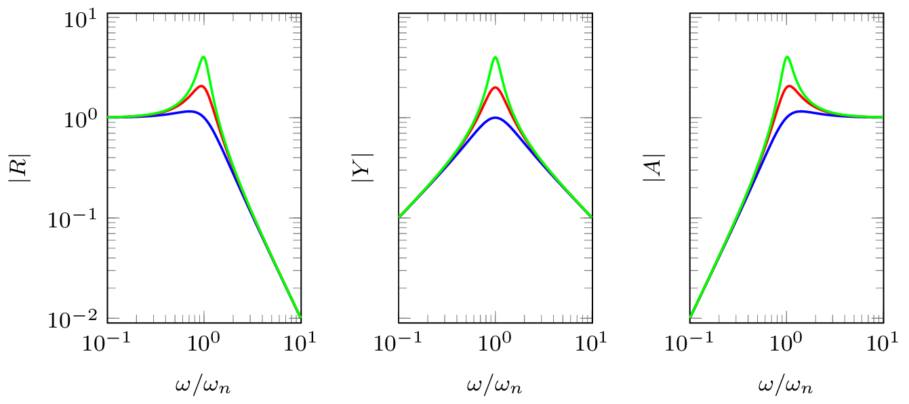
With knowledge of a systems FRF, say the receptance \(R(\omega)\), its response due to a harmonic excitation at frequency \(\omega\) is given by, \[ x(t) = |R(\omega)| F_0 \cos(\omega t - \angle R(\omega)) \quad \mbox{or} \quad x(t) = \mbox{Real}\left(R(\omega) F_0 e^{-i \omega t}\right) \]
Periodic forcing
Having dealt with the case of simple harmonic excitation (periodic over time interval \(T=2\pi/\omega\)), we are now ready to consider excitation by more general periodic functions, an example of which is shown in Figure 14.
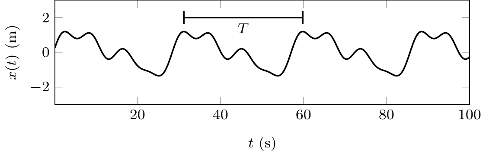
To deal with periodic excitation signals we simply note that any periodic function can be represented by a convergent series of harmonic functions whose frequencies are integer multiples of a fundamental \(\omega_0 = 2\pi/T\). This is the so-called Fourier series, \[ F(t) = \frac{1}{2}F_0 + \mbox{Real}\left[ \sum_{n=1}^\infty F_n e^{-in\omega_0 t}\right] \] where \(F_n\) is a complex coefficient that describes amplitude and phase of the \(n\)th harmonic, with \(F_0\) representing the DC offset of the signal. Since our EoM is linear, we can treat each harmonic individually and recombine their individual solutions afterwards. \[ x(t) = \frac{1}{2}F_0 R(0) + \mbox{Real}\left[\sum_{n=1}^\infty R(n\omega_0) F_n e^{-in\omega_0 t} \right] \] Importantly, each forcing harmonic is multiplied by the complex FRF at the corresponding frequency, \(n\omega_0\).
Arbitrary forcing
To consider an arbitrary, non-harmonic, forcing we can no longer assume that the system is operating at steady state. Rather, we must treat the entire response as transient. To deal with this problem, we will need to introduce the system’s until impulse response function (IRF).
Impulse response function
The unit impulse response of a system is the response obtained by considering the external forcing \(F(t)\) to be that of a Dirac delta function, defined mathematically as \[ \begin{align} \delta(t-a) &= 0 \quad \quad \mbox{for } t\neq a\\ \int_{-\infty}^\infty \delta(t-a){\rm d}t &=1 \end{align} \] Using \(F_e = \delta(t)\), the system impulse response is denoted \(g(t)\).
Inserting \(F_e=\delta(t)\) and \(x(t) = g(t)\), the EoM becomes, \[ \delta(t) = kg(t) + c\dot{g}(t) + m\ddot{g}(t) \] Taking \(g(0)=\dot{g}(0) = 0\) by definition, we integrate our EoM over the time interval \(\Delta t=\epsilon\) and take the limit as this goes to \(0\), \[ \underbrace{ \lim_{\epsilon\rightarrow 0} \int_0^\epsilon \delta(t) dt }_{=1}= \lim_{\epsilon\rightarrow 0} \int_0^\epsilon \left(kg(t) + c\dot{g}(t) + m\ddot{g}(t) \right)dt \] Note that integration of the displacement is just a constant, which goes to zero on evaluation of the limits. Integration of the velocity term yields a displacement, however since it takes some time for a displacement to develop this term also tends to zero in the limit. All we are left with is the acceleration term which evaluates to, \[ \lim_{\epsilon\rightarrow 0} \int_0^\epsilon m\ddot{g}(t)dt = \lim_{\epsilon\rightarrow 0} m\dot{g}(t)\Big|_0^\epsilon = m \lim_{\epsilon\rightarrow 0} [\dot{g}(\epsilon) - \dot{g}(0)] = m\dot{g}(0+) \] where the term \(\dot{g}(0+)\) denotes a change in velocity at the end of the increment \(\epsilon\).
From the above we conclude that, \[ \dot{g}(0+) = \frac{1}{m} \tag{17}\] Physically, Equation 17 is telling us that the unit impulse response produces an instantaneous change in velocity; an impulse applied at \(t=0\) is equivalent to the effect of initial velocity \(\dot{x}_0=1/m\). Recalling our solution to the unforced EoM (see ), the system impulse response is given by, \[ \begin{align} g(t) &= \frac{1}{\omega_d m} \sin(\omega_d t) e^{-\zeta\omega_n t} \quad &t>0 \\ &=0 &t<0 \end{align} \] If excitation happens at \(t=\tau\), \(F_e = \delta(t-\tau)\), then impulse response \(g(t)\) is simply delayed by \(\tau\), \(g(t-\tau)\).
Consider a constant external force \(F_e\) applied over the infinitesimal time \(0<t<\epsilon\). During this time, the velocity of the mass increases from 0 to \(\dot{x}(\epsilon)\), after which its motion is governed by the system dynamics. From Newton’s second law \(F=m\ddot{x}\), and simple kinematics \(\dot{x}(t) = t\ddot{x}\), we have that the velocity at \(t=\epsilon\) is, \[ \dot{x}(\epsilon) = \epsilon\ddot{x} = \frac{\epsilon F}{m} \] The product \(\epsilon F\) is known as the impulse; it describes the change in momentum. We see that a unit impulse (\(\epsilon F = 1\)) is equivalent to an initial velocity that is inversely proportional to the system mass, \(\dot{x}_0 = 1/m\).
Convolution integral
Consider an arbitary forcing function \(F(t)\), for example as in Figure 15. During a small time instant \(\Delta \tau\), we can regard \(F(t)\) as an impulse \(F(\tau)\Delta \tau\), \[ \Delta F(\tau) = F(\tau) \Delta \tau \delta(t-\tau) \] Based on the impulse representation above, the complete forcing function can be approximated as, \[ F(t)\approx \sum F(\tau) \Delta \tau \delta(t-\tau) \] which becomes exact at \(\Delta \tau \rightarrow 0\). Because our mass-spring system is linear, we can use the impulse response function \(g(t)\) to predict response due to each individual excitation impulse, \(\Delta F(t,\tau)\), and then recombine them to realize the final response.
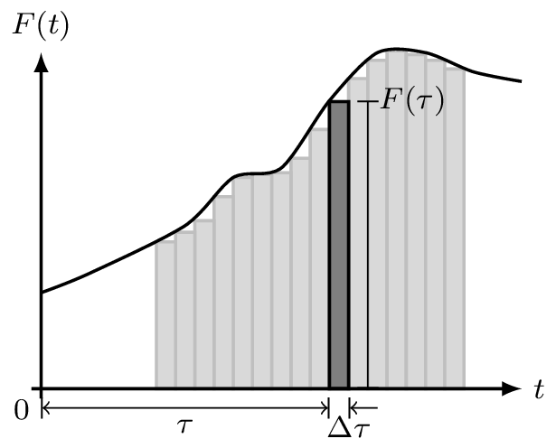
Response at time \(t\) due to impulse \(\Delta F(\tau)\) is given by, \[ \Delta x(t) =F(\tau) \Delta \tau g(t-\tau) \] This is just the impulse response \(g(t)\) weighted by the forcing value \(F(\tau)\) and delayed by \(\tau\), as illustrated in Figure 16. The response due to the full \(F(t)\) is the sum of all individual impulses, \[ x(t) \approx \sum F(\tau) \Delta \tau g(t-\tau) \tag{18}\]
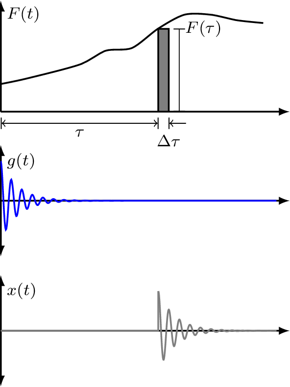
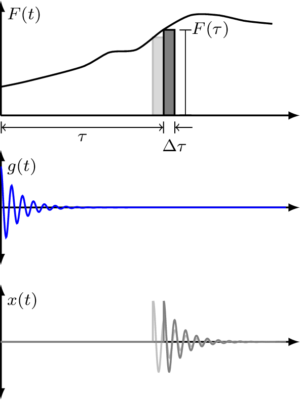
Equation Equation 18 becomes exact at \(\Delta \tau \rightarrow 0\), \[ x(t) = \int_0^t F(\tau) g(t-\tau) d\tau \tag{19}\] This is called the convolution integral. It simply states that the response can be expressed as a superposition of the impulse response weighted by the arbitrary forcing function. In vibration analysis, this is also known as Duhamel’s integral.
It is worthwhile noting that convolution in the time domain is simply a multiplication in the frequency domain. Taking the Fourier transform of Equation 19 yields our harmonic forcing equation from before, \[ X_0(\omega)=R(\omega) F_0(\omega) \] From the above, we see that the FRF \(R(\omega)\) is related to the IRF \(g(t)\) by Fourier transform, \[ R(\omega) = \mathcal{F}(g(t)) \]
Damping
Damping is of such crucial importance in structural vibration that it warants a little more discussion…
Structural damping
In reality, damping is very very complicated… We almost always rely on simplified models. So far we have been assuming a viscous damping model, i.e. the damping force is proportional to velocity. In this case our EoM and displacement FRF take the form, \[ F_e = kx + c\dot{x} + m\ddot{x} \quad \quad R(\omega) = \frac{1}{k + i\omega c - \omega^2 m} \] The viscous damping model, though valid for viscous damping devices, is not always an appropriate representation for the intrinsic damping in structures, as will be discussed below.
Because of damping, our mass-spring system is non-conservative, meaning that energy is not conserved, but dissipated with time. The energy dissipated is equal to work done by the external force. For a single cycle over period \(T\) (noting \({\rm d}x = \dot{x}{\rm d}t\)) the energy dissipated is given by, \[ \Delta E = \int_0^{T} F_e {\rm d}x = \int_0^{2\pi/\omega} F_e\dot{x} {\rm d}t \] Since the dissipated energy must be real valued, we consider the real parts of \(F_e=F_0 e^{-i \omega t}\) and \(\dot{x} = i\omega|R|F_0 e^{-i(\omega t-\phi)}\), \[ \begin{align} \mbox{Real}(\dot{x}) &= |R| F_0 \omega \sin(\omega t - \phi)\\ \mbox{Real}(F_e) &= F_0 \cos\omega t \end{align} \] The energy dissipated then becomes, \[ \begin{align} \Delta E = \int_0^{2\pi/\omega} F_e\dot{x} {\rm d}t &= \int_0^{2\pi/\omega} F_0 \cos(\omega t)|R| F_0\omega \sin(\omega t -\phi) {\rm d}t\\ &= F_0^2 \omega |R| \underbrace{\int_0^{2\pi/\omega} \cos(\omega t) \sin(\omega t - \phi) {\rm d}t}_{\frac{\pi}{\omega} \sin \phi}\\ &= F_0^2 |R| \pi \sin \phi \end{align} \] Next, we need to determine \(\sin\phi\)… We know the phase angle is given by, \[ \phi = \tan^{-1}\left( \frac{\mbox{imag}}{\mbox{real}} \right) = \tan^{-1}\left( \frac{-\zeta 2 k \frac{\omega}{\omega_n} }{k\left(1 - \frac{\omega^2}{\omega_n^2}\right)} \right) =\tan^{-1}\left( \frac{-c \omega }{k - \omega^2 m} \right) \] So by using the trig identity \(\sin(\tan^{-1}(x)) = x/\sqrt{1+x^2}\), after a little algebra, we obtain, \[ \sin\phi = \frac{-\omega c}{\sqrt{(k-\omega^2m)^2 + (\omega c)^2}} = -\omega c |R| \] The energy dissipated per cycle now becomes, \[ \Delta E = F_0^2 |R| \pi \sin \phi = \underbrace{|R|^2 F_0^2}_{|X_0|^2} \pi \omega c \tag{20}\]
We see from Equation 29 that for a viscous damper, the energy dissipated per cycle is proportional to: damping coefficient \(c\), frequency \(\omega\) and amplitude squared \(|X_0|^2\)
In real systems, even without designated damping devices, energy is dissipated over time. For example, in real springs (i.e. coil springs) energy is dissipated as a result of internal friction within the material. This phenomenon occurs in all real structures. Experiments on wide variety of materials indicate that the energy loss per cycle due to internal friction is roughly proportional to amplitude squared, \[ \Delta E = \alpha |X_0|^2 \] where \(\alpha\) is a constant independent of frequency. We call the above structural damping. It can be attributed to hysteresis phenomenon associated with cyclic stresses in elastic materials.
A system with structural damping can be treated as having viscous damping with an equivalent, frequency dependent, damping coefficient, \[ \begin{align} c_{eq} = \frac{\alpha}{\pi\omega} \quad \rightarrow\quad \Delta E &= c_{eq}\pi\omega |X_0|^2 \\ &=\alpha|X_0|^2 \end{align} \] Using this new equivalent damping factor our EoM becomes, \[ \begin{align} F_e = kx + \frac{\alpha}{\pi\omega} \dot{x} + m\ddot{x} \quad \rightarrow \quad F_0 &= kX_0 + \frac{i\omega \alpha}{\pi\omega} X_0 +m\ddot{X}_0\\ &= {\left(k + \frac{i\omega \alpha}{\pi\omega} \right)} X_0 +m\ddot{X}_0 \end{align} \] From the above it is convenient to define a complex stiffness \(k(1+i\gamma)\), where \(\gamma = \alpha/\pi k\) is termed the structural loss factor.
In the presence of structural damping, the system’s harmonic response becomes, \[ x(t) = \mbox{Real}\left(X_0 e^{i\omega t} \right) = |X_0| \cos(\omega t-\angle X_0) \quad \quad X_0 = \overbrace{\frac{1}{k(1+i\gamma)-\omega^2m}}^{R(\omega)}F_0 \]
Shown in Figure 17 are some system responses for different levels of viscous and structural damping. We see that with structural damping the peak amplitude doesn’t shift with increasing levels of damping and the response is no longer stiffness controlled at low frequency.
Here are some loss factors for typical materials:
- Glass \(\sim 1\times10^{-4}\)
- Steel \(\sim 1\times10^{-3}\)
- Perspex \(\sim 0.1\)
- Rubber \(\sim >0.1\)
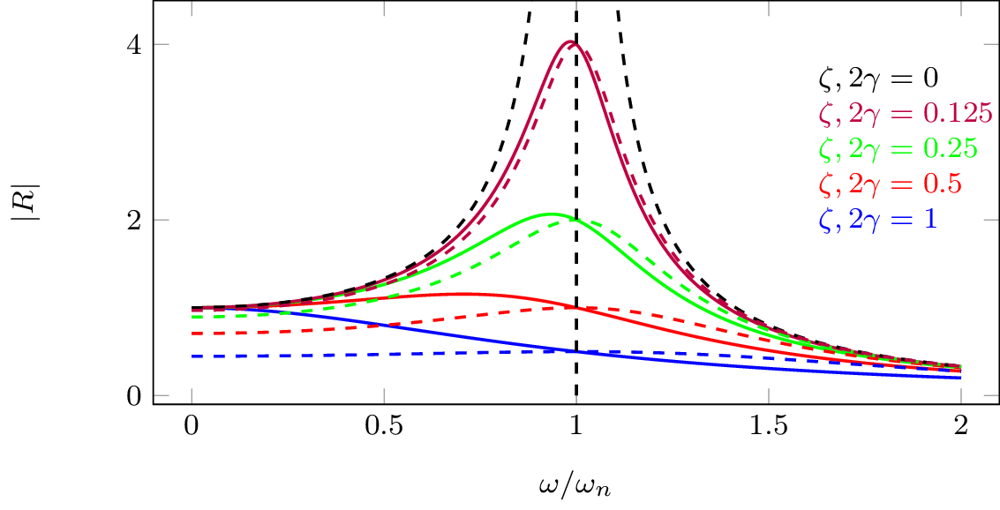
Important: structural damping is only valid for harmonic excitation - we assumed \(F_0e^{i\omega t}\) in the foregoing analysis. It can’t use this for transient analysis! It turns out that structural damping can give a non-causal transient responses…
Estimating damping
The amount of damping in a system is often unknown, though it can be estimated from measurements in a number of ways. Below we discus two simple approaches based on unforced and forced system responses.
Log-decrement method
Assuming a viscous damping force, we know that the system response decays exponentially according to, \[ x(t) = A\cos(\omega_d t - \phi) e^{-\zeta\omega_n t} \] Let us consider the amplitude ratio after a period \(T\), \[ \frac{x_1}{x_2} = \frac{A\cos(\omega_d t_1 - \phi) e^{-\zeta\omega_n t_1} }{A\cos(\omega_d t_2 - \phi) e^{-\zeta\omega_n t_2} } \] Noting that the \(\cos(\quad)\) term does not change after period \(T\), the amplitude ratio reduces to, \[ \frac{x_1}{x_2} = \frac{e^{-\zeta\omega_n t_1} }{e^{-\zeta\omega_n (t_1+T)} } = e^{\zeta\omega_n T} \] Taking the natural log \(\ln\) of both sides yields, \[ \ln\left(\frac{x_1}{x_2}\right) = \zeta\omega_n T \] where we define the so-called log-decrement as \(\delta = \ln(x_1/x_2)\). This is something that we can easily obtain from a measurement of the system’s decay response.
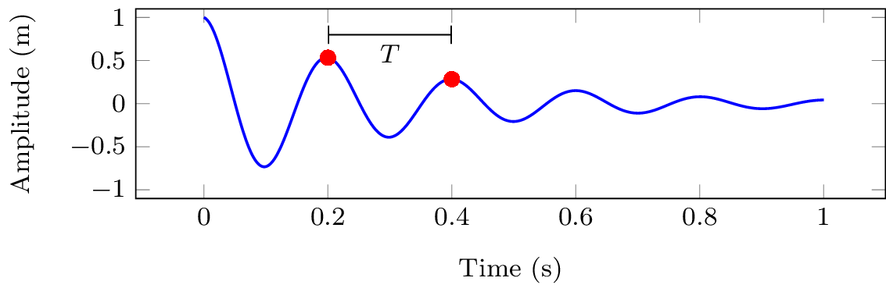
Substituting for the decay period \(T=2\pi/\omega_d\) and also the natural frequencies \(\omega_n\) and \(\omega_d\), the log-decrement becomes, \[ \delta = \ln\left(\frac{x_1}{x_2}\right) = \zeta\omega_n T = \zeta\omega_n \frac{2\pi }{\omega_d} = \frac{\zeta 2\pi}{\sqrt{1-\zeta^2}} \tag{21}\] Equation 21 can be rearranged and used to solve for damping factor \(\zeta\), \[ \zeta = \frac{\delta}{\sqrt{(2\pi)^2 + \delta^2}} \] This estimate of \(\zeta\) makes use of two sequential peaks in the decay response. This is fine, but can be quite sensitive to experimental uncertainty. A better estimate can be made by utilizing multiple peaks as described below.
Note that the displacement ratio for the \(1\)st and \(n\)th peaks can be written as, \[ \begin{align} \frac{x_1}{x_n} = \frac{x_1}{x_2}\, \frac{x_2}{x_3} \, \frac{x_3}{x_4} \cdots \frac{x_{n-1}}{x_n} = (e^{\zeta\omega_nT})^n= e^{n\zeta\omega_nT} \end{align} \] An improved (or at least more robust) estimate of the log-decrement (and so also \(\zeta\)) can then be obtained using, \[ \delta_n = \frac{1}{n-1} \ln\left(\frac{x_1}{x_n}\right) \]
Resonance bandwidth
Considering now the forced response of a viscous damped mass-spring system as in Figure 9.
The `peakyness’ or sharpness of a resonant response is an important characteristic of vibrating system. We can characterise the sharpness of a resonance using the so called Q-factor.
There are two slightly different definitions of Q-factor, one defined in terms of half power bandwidth (as detailed below) and another defined in terms of dissipated energy. The two definitions tend to the same value for lightly damped system (i.e. \(\zeta<0.05\) or so), though the former is more useful from a damping estimation perspective as see shortly.
The half power bandwidth-based definition of Q-factor takes the form, \[ Q \triangleq \frac{\omega_n}{\Delta \omega} = \frac{\omega_n}{\omega_2 - \omega_1} \] where \(\omega_n\) is the natural frequency of the system, and \(\Delta \omega\) is the half power bandwidth, i.e. the spacing between the upper and lower frequencies \(\omega_2\) and \(\omega_1\) where the output power of the system is half that of the maximum value (these are the -3dB points surrounding the resonant peak in mobility). Note that \(\omega_n\) and \(\Delta \omega\) can be measured quite easily.
It is possible to reformulate the Q-factor in terms of the mass, stiffness and damping of a system. This form will be particularly useful as it will allow us to estimate the damping based on measured Q-factor.
To derive this alternate form we begin by recalling the natural frequency as a function of system mass and stiffness, \[ \omega_n = \sqrt{\frac{k}{m}}. \tag{22}\] Next we must derive an appropriate expression for the full half power bandwidth \(\Delta \omega\).
The complex power \(P\) of a vibration system is given by, \[
P = \dot{x}^*F
\] where \(\dot{x}^*\) is the complex conjugate of the velocity \(\dot{x}\). Note that we are interested in the real power. This is the power that actually does work on the system. \[
\mbox{real}(P) = \mbox{real}(\dot{x}^*F)
\] Now we can substitute the force \(F\) for the product of velocity and impedance, \[
\mbox{real}(P) = \mbox{real}(\dot{x}^* \dot{x} Z).
\] Using the identity \(z^*z = |z|^2\), the above becomes \[
\mbox{real}(P) = |\dot{x}|^2 \mbox{real}(Z)
\]
which leaves us with \[
\mbox{real}(P) = |\dot{x}|^2 c.
\tag{23}\] where \(c\) is the viscous damping factor. Equation 23 states that the real power is proportional to the velocity squared and the damping of the system.
Clearly, the maximum achievable power is that when the velocity is a maximum, \[ P_{max} = |\dot{x}_{max} |^2 c \] The half maximum power can then be written as, \[ \frac{P_{max}}{2} = \frac{|\dot{x}_{max} |^2}{2} c = \left|\frac{\dot{x}}{\sqrt{2}}\right|^2 c \]
We are interested in when the real power \(\mbox{real}(P)\) is equal to the half maximum power, \[ \mbox{real}(P) = \frac{P_{max}}{2}\rightarrow |\dot{x}|^2 c = \frac{|{\dot{x}_{max}}|^2}{2} c \] which is equivalent to, \[ |\dot{x}| = \left|\frac{\dot{x}_{max}}{\sqrt{2}}\right| \] Noting that \(|\dot{x}|=\frac{F}{Z}\), the above may be rewritten in the form, \[ \left|\frac{F}{Z}\right| = \left|\frac{F}{c\sqrt{2}}\right| \rightarrow |Z|=c\sqrt{2}. \] Squaring both sides of the above we get, \[ {c^2 + \left(\omega m - \frac{k}{\omega}\right)^2 } = 2c^2 \] This equation has two solutions, \(\left(\omega m - \frac{k}{\omega}\right)=\pm c\). \[ \begin{align} \omega_1 m - \frac{k}{\omega_1 } = c& &\omega_2 m - \frac{k}{\omega_2} = -c\\ \omega^2_1 m - \omega_1 c=k& & \omega^2_2 m + \omega_2 c=\phantom{-}k \end{align} \] we arrive at an equation for the full half power bandwidth \(\Delta \omega = \omega_2 -\omega_1\), \[ \omega^2_1 m - \omega_1 c = \omega^2_2 m + \omega_2 c \rightarrow \omega_2 -\omega_1 = \frac{c}{m}. \tag{24}\]
Substituting Equation 24 and Equation 22 into the definition of Q-factor we can derive alternate forms of the Q-factor, \[ Q = \frac{\sqrt{\frac{k}{m}}}{\frac{c}{m}} = \frac{m}{c} \sqrt{\frac{k}{m}} = \frac{m \omega_n}{c} = \frac{1}{c}\sqrt{mk}. \] Recalling our defintion of the viscous damping coefficient \(\zeta = \frac{c}{2m\omega_n}\), we can substitute \(c = \zeta 2m\omega_n\) into the above to obtain, \[ Q = \frac{m \omega_n}{c} = \frac{m \omega_n}{\zeta 2m\omega_n} = \frac{1}{2 \zeta} \tag{25}\] or more simply, \[ \frac{\omega_n}{\Delta \omega} = \frac{1}{2 \zeta} \tag{26}\] From Equation 26 we can easily obtain \(\zeta\) given a measurement of \(\omega_n\) and \(\Delta \omega\). Note however, that in the above derivation we used the undamped natural frequnecy \(\omega_n\), even though our system is damped… For lightly damped systems \(\omega_n \approx \omega_d\) and Equation 26 holds. For highly damped systems it does not.
A more precicse definition of Q-factor is by the ratio of the mean stored energy at resonance (\(\omega_d\)) to the energy disipated per cycle at resonance, \[ Q = 2\pi \frac{\mbox{Mean energy stored at resonance}}{\mbox{Energy dissipated per cycle at resonance}} \tag{27}\] The potential and kinetic energy of an oscillating mass-spring system are given by, \[ U = \frac{1}{2}k|X_0|^2 \quad \mbox{and} \quad K = \frac{1}{2}m|\dot{X}_0|^2 %= -\frac{1}{2}m \omega^2 |X_0|^2 \] When a system oscillates, energy is transformed backwards and forwards between potential and kinetic.
At resonance, the mean energy stored can be expressed entirely in terms of the potential energy, \[ E = \frac{1}{2}k|X_0|^2%+\frac{1}{2}m \omega^2 |X_0|^2 = \frac{|X_0|^2}{2}\left(k+\omega^2 m\right) \tag{28}\] Recalling Equation 29, the energy disipated per cycles by a viscous damped is given by, \[ \Delta E = |X_0|^2 \pi \omega c \tag{29}\] Substiuting Equation 28 and Equation 29 into the energy-based defintion of Q-factor (Equation 27), we obtain, \[ Q = 2\pi \frac{\frac{1}{2}k|X_{0}|^2}{|X_{0}|^2 \pi \omega_d c } = \frac{k}{\omega_d c } = \frac{k}{ 2 \zeta m \omega_d\omega_n } = \frac{\omega_n^2}{ 2 \zeta \omega_d\omega_n } \approx \frac{1}{2 \zeta} \] which, for lightly damped systems (\(\omega_d\approx \omega_n\)), agrees with the bandwidth-based defintiion in Equation 25.